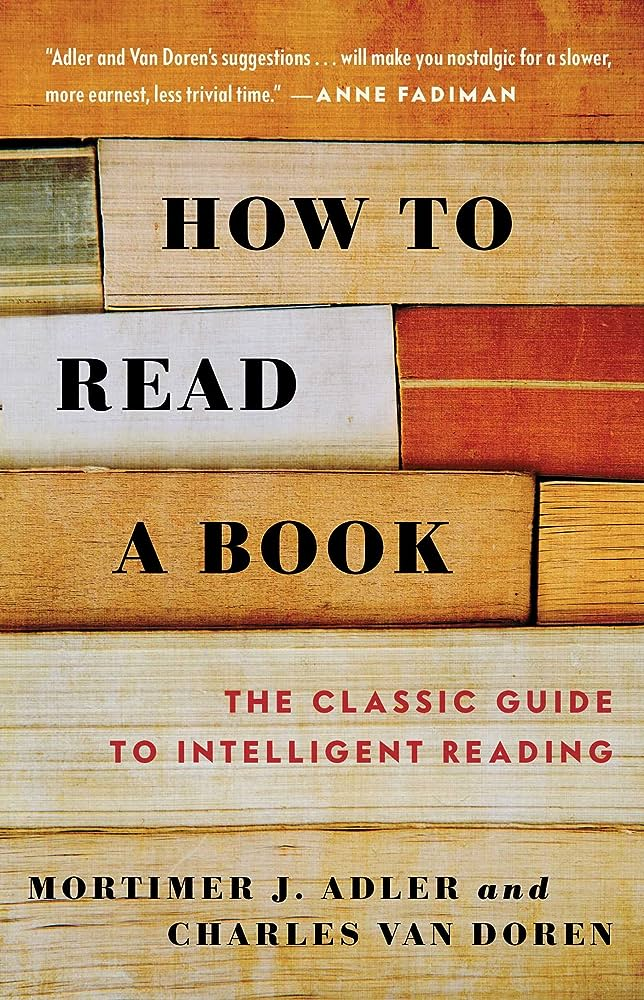

published on 2014-09-30 by Simon & Schuster, Inc
Progress: 0/0 pages
How to Read a Book, originally published in 1940, has become a rare phenomenon, a living classic. It is the best and most successful guide to reading comprehension for the general reader. And now it has been completely rewritten and updated.
You are told about the various levels of reading and how to achieve them – from elementary reading, through systematic skimming and inspectional reading, to speed reading, you learn how to pigeon-hole a book, X-ray it, extract the author’s message, criticize.
You are taught the different reading techniques for reading practical books, imaginative literature, plays, poetry, history, science and mathematics, philosophy and social science.
Finally, the authors offer a recommended reading list and supply reading tests whereby you can measure your own progress in reading skills, comprehension and speed.
Summary
Themes
3 Main Takeaways
Quotes
We do not have to know everything about something in order to understand it.
To be informed is to know simply that something is the case. To be enlightened is to know, in addition, what its connections are with other facts, is what respects is the same, in what respects it is different and so forth.
The Greeks had a name for such a mixture of learning and folly which might be applied to the bookish but poorly read of all ages. They are all sophomores.
Some books are to be tasted, others to be swallowed, and some few to be chewed and digested.
– Francis Bacon
Other Notes
Thinking is only one part of the activity of learning. To really learn you need to engage your other senses and your imagination. You need to observe, remember, decompose and build new ideas when they cannot be observed.
There are four levels of reading, each level is dependent on acquiring the skills of the lower level first.
To become a synoptical reader, you must have the skills of an analytical reader. To have the skills of an analytical reader you must have the skills of the inspectional reader, and all of these skills rely on one having elementary reading skills.
Elementary Reading
Elementary reading is the foundational level of reading. Many people achieve this level by being exposed to reading material in their youth.
However, most primary schools, high schools and universities do not teach how to read beyond the elementary reading level as part of normal coursework. Some universities may have courses focuses on teaching how to read analytically, but a typical person should not be expected to go through 13 years of education and then another 3 to 4 just to learn how to read effectively.
In Australia:
about 44% of adults read at literacy level 1 to 2 (a low level)
38% of adults read at level 3
about 15% read at level 4 to 5 (the highest level).
People at a reading level 1 read at a primary school equivalent level. They can understand short sentences.
Inspectional Reading
Inspectional reading is where one starts to develop as a reader. Inspectional reading contains two levels that must be practices before becoming proficient.
Systematic Skimming or Pre-reading
Outcome: Discover if a book requires more careful reading.
Look at the title page and if the book has one the preface
Read quickly
What do the titles and subtitles tell you the book covers?
What is the scope, aim or opinion the author brings to the conversation?
What other books in your collection does this book vibe with?
Study the table of contents
How is the book structured?
What does your journey look like?
Study the index (if the book has one)
What topics are covered in the book and at what frequency?
What crucial terms can you find? Sample a few pages, what does the book have to say on these topics?
Read the publishers blurb
Superficial Reading
While these levels make up the same skill, it is not until someone becomes a skilled inspectional reader that they learn how to perform both activities at the same time.